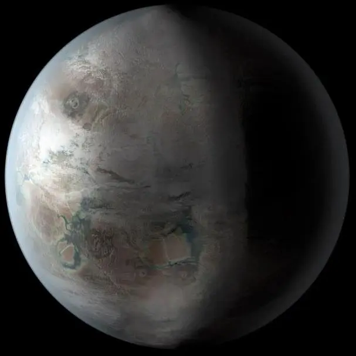

Kepler-452 b — Exoplaneta

Introdução e História
Kepler-452 b é um exoplaneta classificado como super-Terra e foi identificado pela missão Kepler da NASA por meio do método de trânsito, anunciado em 23 de julho de 2015.
Ele orbita a estrela Kepler-452, uma estrela anã amarela muito semelhante ao Sol, localizada a cerca de 1.400 a 1.800 anos-luz da Terra, na constelação do Cisne.
Características Físicas: Massa, Tamanho e Órbita
Kepler-452 b tem um raio de aproximadamente 1,63 vezes o da Terra, o que o coloca na categoria de super-Terras. Sua massa estimada varia entre 3 e 5 vezes a massa terrestre, embora ainda exista incerteza.
Ele orbita sua estrela em cerca de 385 dias terrestres, a uma distância de aproximadamente 1,046 UA, uma posição semelhante à da Terra em relação ao Sol, porém recebendo cerca de 10% mais radiação.
Essas características fazem de Kepler-452 b um dos exoplanetas mais relevantes descobertos dentro da zona habitável de uma estrela parecida com o Sol.
Potencial de Habitabilidade
- 💧 Zona Habitável: Kepler-452 b encontra-se na zona habitável de sua estrela, onde a temperatura pode permitir a existência de água líquida.
- 🌍 Análogo Terrestre: É frequentemente descrito como um dos exoplanetas mais semelhantes à Terra já identificados.
- ❓ Ambiente Desconhecido: Não há confirmação observacional de atmosfera ou condições reais de superfície.
Por esses motivos, Kepler-452 b é considerado um dos principais candidatos quando se discute a possibilidade de mundos semelhantes à Terra fora do Sistema Solar.
Curiosidades
Kepler-452 b é frequentemente apelidado de “prima mais velha da Terra”, pois orbita uma estrela semelhante ao Sol que é cerca de 1,5 bilhão de anos mais antiga.
Essa idade maior pode indicar que o planeta já passou por uma evolução climática avançada, possivelmente entrando em uma fase de efeito estufa intenso.
Até o momento, todas as imagens do planeta são representações artísticas baseadas em dados indiretos.
Origem do Nome
O nome “Kepler-452 b” segue a nomenclatura astronômica científica, formada pelo nome da estrela hospedeira (Kepler-452) e pela letra “b”, que indica o primeiro planeta descoberto no sistema.
Referências
- NASA. Kepler-452 b — Exoplanet Catalog. Disponível em: https://science.nasa.gov/exoplanet-catalog/kepler-452-b/. Acesso em: 27 dez. 2025.
- Wikipedia. Kepler-452b. Disponível em: https://pt.wikipedia.org/wiki/Kepler-452b. Acesso em: 27 dez. 2025.